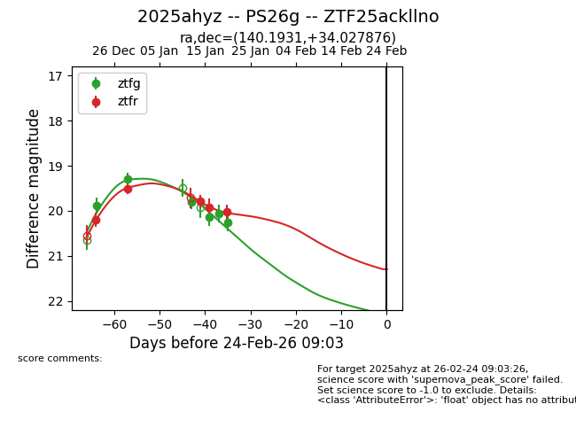
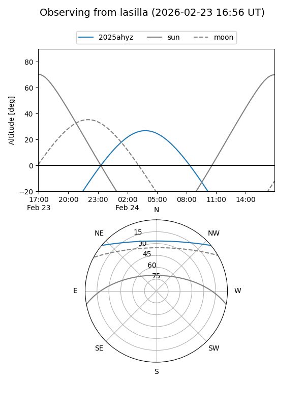
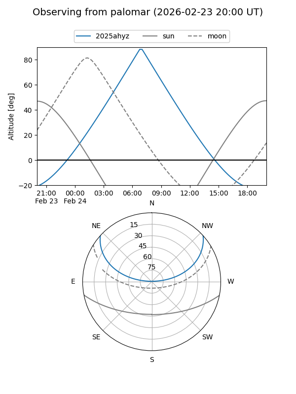
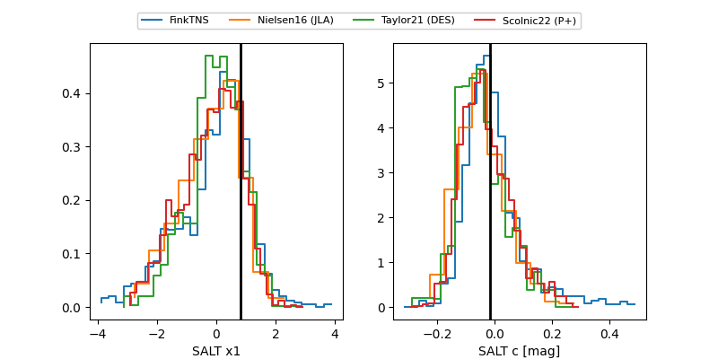

2025ahyz
Target 2025ahyz at 2025-12-22 21:06
Aliases and brokers:
FINK: fink-portal.org/ZTF25ackllno
Lasair: lasair-ztf.lsst.ac.uk/objects/ZTF25ackllno
ALeRCE: alerce.online/object/ZTF25ackllno
TNS: wis-tns.org/object/2025ahyz
YSE: ziggy.ucolick.org/yse/transient_detail/2025ahyz
alt names
ZTF25ackllno (ztf,fink_ztf)
2025ahyz (tns,yse)
Coordinates:
equatorial (ra, dec) = 140.1931,+34.02788
equatorial (HMS+DMS) = 09:20:46.33,+34:01:40.35
galactic (l, b) = (190.7369,+44.62650)
Flags:
Photometry:
last ztfg=19.88, ztfr=20.19
1 ztfg, 1 ztfr detections
Lightcurve

Visibility


Additional plots
